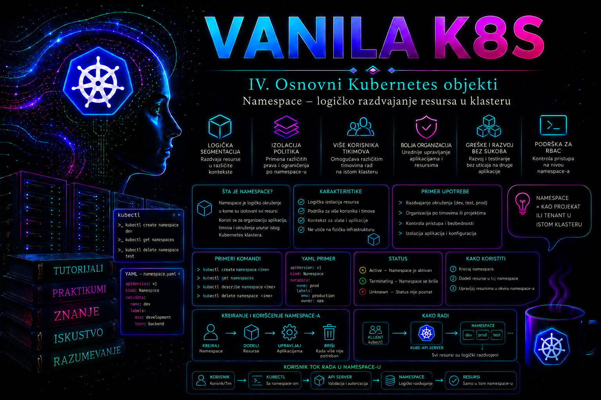

Vanilla Kubernetes

Kubernetes klaster često istovremeno koriste različiti timovi, aplikacije, razvojna okruženja i automatizovani sistemi. Kada bi svi objekti bili smešteni u jedan zajednički prostor, nazivi bi se sudarali, ovlašćenja bi bila teško kontrolisana, potrošnja resursa ne bi mogla jasno da se pripiše vlasniku, a greška u jednoj administrativnoj komandi mogla bi da utiče na veliki deo klastera. Objekat Namespace uvodi logičku granicu unutar klastera i omogućava da se namespaced Kubernetes resursi organizuju, adresiraju, ograničavaju i administriraju kao zasebne celine.
Namespace nije virtuelna mašina, poseban klaster niti automatska bezbednosna barijera. Svi namespace-ovi koriste isti Kubernetes control plane i, po pravilu, iste worker čvorove, mrežnu infrastrukturu i raspoložive klase skladišta. Pravilno projektovan namespace zato predstavlja osnovu višekorisničkog rada, ali se stvarna izolacija dobija tek kombinovanjem namespace-a sa RBAC pravilima, ResourceQuota i LimitRange objektima, NetworkPolicy pravilima, pravilima za prijem objekata, bezbednosnim kontrolama i odgovarajućim procedurama za promene.
Unutar te granice, labels daju objektima operativni identitet, selectors povezuju identitet sa ponašanjem kontrolera i servisa, a annotations čuvaju kontekst namenjen ljudima i automatizaciji. Ova četiri mehanizma zajedno čine osnovni model organizacije Kubernetes API objekata. Njihova preciznost neposredno utiče na to koji Pod kontroler usklađuje, koji backend Service uključuje, koja politika obuhvata workload i koliko pouzdano administrator može da pronađe, promeni i auditira resurse.
Uloga Namespace objekta
Namespace grupiše objekte čiji je API opseg namespaced. Deployment, ReplicaSet, Pod, Service, ConfigMap, Secret, ServiceAccount, Role, RoleBinding, ResourceQuota i većina objekata aplikativnog nivoa pripadaju tačno jednom namespace-u. Njihovo ime mora biti jedinstveno samo unutar tog namespace-a. Zbog toga u namespace-ovima development i production mogu postojati dva Deployment objekta sa istim imenom, na primer portal, bez konflikta.
Nasuprot tome, Node, Namespace, PersistentVolume, StorageClass, ClusterRole, ClusterRoleBinding, CustomResourceDefinition i drugi cluster-scoped objekti ne pripadaju namespace-u. Njihova imena moraju biti jedinstvena u celom klasteru, a njihov životni ciklus i ovlašćenja ne mogu se ograničiti samo navođenjem opcije -n. Administrator pre svake promene treba da proveri opseg konkretnog API resursa:
kubectl api-resources
kubectl api-resources --namespaced=true
kubectl api-resources --namespaced=false
Kolona NAMESPACED pokazuje da li se objekat adresira zajedno sa namespace-om. Ova provera je važna u automatizaciji i cleanup procedurama: komanda koja briše sve objekte u namespace-u neće obuhvatiti pripadajući PersistentVolume, StorageClass ili ClusterRole, čak i kada su ti cluster-scoped objekti funkcionalno povezani sa aplikacijom.
Podrazumevani sistemski namespace-ovi
Standardni Kubernetes klaster obično počinje sa četiri namespace-a. Njihovo postojanje ne znači da svi imaju isti bezbednosni značaj:
- default prima namespaced objekte za koje klijent ili manifest nisu naveli drugi namespace. Pogodan je za početno učenje, ali nije preporučeno mesto za nekontrolisano smeštanje produkcionih aplikacija.
- kube-system namenjen je komponentama i pomoćnim servisima klastera, kao što su DNS, mrežni dodaci, metrics komponente ili control plane podovi kada se oni izvršavaju kao statički ili upravljani workload-i. Promene u ovom namespace-u zahtevaju administratorsku procenu uticaja na ceo klaster.
- kube-public predviđen je za podatke koji treba da budu čitljivi širom klastera. Njegova javna priroda je konvencija i zavisi od stvarne konfiguracije autorizacije; naziv sam po sebi ne garantuje niti ograničava pristup.
- kube-node-lease sadrži Lease objekte povezane sa čvorovima. Kubelet ih periodično obnavlja kako bi control plane efikasno procenjivao dostupnost čvorova. Aplikativni objekti ne treba da se smeštaju u ovaj namespace.
Produkcioni workload ne treba raspoređivati u sistemske namespace-ove samo zato što korisnik poseduje dovoljno široka prava. Time se otežavaju audit, nadogradnja, troubleshooting i razdvajanje odgovornosti, a pogrešna komanda sa selektorom ili operacijom brisanja može zahvatiti komponente od kojih zavisi ceo klaster.
Kreiranje, izbor i adresiranje namespace-a
Namespace je deklarativni API objekat. Može se kreirati imperativnom komandom, ali je za kontrolisana okruženja poželjno čuvati manifest u sistemu za upravljanje verzijama:
apiVersion: v1
kind: Namespace
metadata:
name: payments-dev
labels:
app.kubernetes.io/part-of: payments
environment: development
owner: team-payments
Manifest omogućava pregled promene, dosledne oznake i ponovljivu implementaciju. Namespace se primenjuje bez opcije -n zato što je sam Namespace cluster-scoped objekat:
kubectl apply -f payments-dev-namespace.yaml
kubectl get namespace payments-dev --show-labels
kubectl describe namespace payments-dev
Kada se resurs kreira imperativno, namespace se navodi opcijom --namespace ili skraćeno -n. U manifestu se navodi u polju metadata.namespace. Ako su obe vrednosti prisutne i međusobno neusaglašene, kubectl neće tiho preusmeriti objekat, već će prijaviti konflikt. Za repozitorijume produkcionih manifesta preporučljivo je eksplicitno navesti metadata.namespace, osim kada alat za templating ili GitOps sistem pouzdano postavlja ciljnu vrednost.
kubectl get pods -n payments-dev
kubectl get deployments,services -n payments-dev
kubectl get pods --all-namespaces
kubectl get pods -ANamespace može biti postavljen kao podrazumevana vrednost trenutnog kubeconfig konteksta:
kubectl config set-context --current --namespace=payments-dev
kubectl config view --minify --output 'jsonpath={..namespace}'; echo
Ova izmena utiče samo na lokalni kubeconfig kontekst, a ne na klaster. Prednost je manje ponavljanja opcije -n, ali postoji operativni rizik: administrator može zaboraviti koji je namespace aktivan. Pre promene ili brisanja uvek treba proveriti trenutni kontekst i namespace:
kubectl config current-context
kubectl config view --minify
kubectl get namespace
U runbook procedurama i automatizaciji bezbednije je eksplicitno navoditi --context i --namespace nego zavisiti od lokalno izabranog konteksta.
Namespace i pronalaženje servisa
Kubernetes DNS uzima namespace u obzir prilikom formiranja imena Service objekata. Pod može Service iz svog namespace-a obično da pronađe kratkim imenom, na primer payments-api. Za pristup servisu iz drugog namespace-a koristi se najmanje oblik payments-api.payments-dev, a potpuno kvalifikovano ime je najčešće payments-api.payments-dev.svc.cluster.local. Završni DNS domen može biti drugačiji ako je klaster konfigurisan sa drugim cluster domain-om.
Kratko ime nije globalni naziv. Ako Pod iz namespace-a reporting-dev zatraži payments-api, resolver najpre traži istoimeni Service u reporting-dev, a ne u payments-dev. Greška koja izgleda kao nedostupan servis zato može biti samo pogrešno razumevanje DNS opsega. Administrator proverava Service, EndpointSlice objekte, DNS konfiguraciju Poda i rezoluciju punog imena:
kubectl get service,endpointslice -n payments-dev
kubectl exec -n reporting-dev dns-test -- \
nslookup payments-api.payments-dev.svc.cluster.local
kubectl exec -n reporting-dev dns-test -- cat /etc/resolv.confDNS ime omogućava pronalaženje, ali ne predstavlja dozvolu za komunikaciju. Bez NetworkPolicy ograničenja, mrežni dodatak često dozvoljava komunikaciju između namespace-ova. Namespace zato ne sme da se tretira kao firewall.
Namespace kao granica ovlašćenja
RBAC omogućava da se prava vežu za određeni namespace. Role sadrži skup dozvoljenih API operacija, dok RoleBinding dodeljuje te dozvole korisniku, grupi ili ServiceAccount objektu u konkretnom namespace-u. RoleBinding može referencirati lokalni Role ili postojeći ClusterRole, ali dodeljeno pravo i dalje važi samo u namespace-u u kojem je RoleBinding kreiran.
ClusterRoleBinding je suštinski drugačiji: njime se prava dodeljuju na nivou celog klastera. Korišćenje ClusterRoleBinding objekta kada je timu potreban pristup samo jednom namespace-u predstavlja čestu i ozbiljnu grešku. Princip najmanjih privilegija zahteva da se odobre samo potrebni glagoli, API grupe i tipovi objekata, a zatim da se dozvole provere iz perspektive ciljnog identiteta:
kubectl auth can-i get pods \
--namespace=payments-dev \
--as=payments-developer
kubectl auth can-i delete namespaces
--as=payments-developer
kubectl auth can-i --list
--namespace=payments-dev
--as=payments-developer
Opcija --as koristi impersonation i zahteva posebno pravo. Bez tog prava administrator treba da izvrši proveru odgovarajućim testnim identitetom ili kroz kontrolisani proces za validaciju pristupa. Uspešan can-i test potvrđuje autorizacionu odluku, ali ne potvrđuje da objekat postoji, da je mreža dostupna ili da će admission politika prihvatiti zahtev.
Kontrola potrošnje resursa
Namespace sam po sebi ne ograničava CPU, memoriju, skladište niti broj objekata. Bez dodatnih politika jedan tim može kreirati veliki broj Podova, zahteva za skladište ili servisa i time ugroziti druge korisnike klastera. ResourceQuota ograničava zbirnu potrošnju ili broj objekata u jednom namespace-u, dok LimitRange definiše podrazumevane, minimalne i maksimalne vrednosti za pojedinačne kontejnere, Podove ili PersistentVolumeClaim objekte.
ResourceQuota se proverava pri admission obradi novih ili izmenjenih objekata. Kada bi zahtev prekoračio kvotu, API server odbija operaciju. To nije kvar schedulera niti nedostatak kapaciteta na čvoru. Administrator razlikuje ova stanja po mestu odbijanja: prekoračenje kvote daje neposrednu API grešku, dok prihvaćen Pod bez raspoloživog kapaciteta ostaje u stanju Pending i dobija scheduler događaje.
kubectl get resourcequota -n payments-dev
kubectl describe resourcequota -n payments-dev
kubectl get limitrange -n payments-dev
kubectl describe limitrange -n payments-dev
kubectl get events -n payments-dev --sort-by=.metadata.creationTimestampLimitRange i ResourceQuota deluju na nove zahteve. Dodavanje ili izmena LimitRange objekta ne menja automatski već pokrenute Podove. Ako u istom namespace-u postoji više LimitRange objekata sa podrazumevanim vrednostima, ne treba se oslanjati na redosled njihove primene; standardizovan namespace treba da ima jednu jasno dokumentovanu politiku po vrsti resursa.
Planiranje namespace strukture
Dobra struktura prati vlasništvo, životni ciklus, nivo poverenja i operativne granice. Uobičajen model je poseban namespace po aplikaciji i okruženju, na primer payments-dev, payments-test i payments-prod. Za velike platforme može se koristiti namespace po timu i okruženju, pod uslovom da aplikacije unutar njega imaju zajednički životni ciklus i prihvatljiv nivo međusobnog poverenja.
Namespace nije pogodan kao jedina granica za strogo regulatorno ili organizaciono razdvajanje. Workload-i i dalje dele control plane, a često i čvorove, mrežu, CSI i druge cluster-scoped komponente. Kada su potrebni različiti administrativni domeni, nezavisne nadogradnje, posebni ključevi za šifrovanje, stroga regulatorna izolacija ili ograničavanje posledica kompromitovanja control plane-a, potreban je poseban klaster ili dodatna platformska izolacija.
Namespace nazivi treba da budu stabilni, kratki, čitljivi i pogodni za automatizaciju. Promena imena nije podržana kao običan update; resursi se migriraju u novi namespace, testiraju, a stari namespace se zatim kontrolisano uklanja. Oznake kao što su vlasnik, okruženje, troškovni centar, klasifikacija podataka i upravljački sistem olakšavaju pretragu, politiku i izveštavanje, ali njihove vrednosti moraju pratiti organizacioni standard.
Labels – operativni identitet objekta
Label je par ključ–vrednost u metadata.labels koji opisuje identitet ili pripadnost objekta i namenjen je efikasnom izboru kolekcija objekata. Label nije samo „tag za lepši inventar”: kontroleri, Service objekti, NetworkPolicy pravila i brojni administratorski alati koriste selektore nad label vrednostima da bi odlučili nad kojim objektima deluju. Pogrešna label vrednost zato može odvojiti Pod od Service-a, uključiti ga u pogrešnu kontrolnu petlju ili proširiti opseg administrativne komande.
Ključ može imati opcioni DNS prefiks i obavezni segment imena, na primer app.kubernetes.io/name. Prefiks, kada postoji, mora biti DNS poddomen i odvaja domen vlasništva nad ključem; deo posle kose crte može imati najviše 63 znaka. Prefiksi kubernetes.io/ i k8s.io/ rezervisani su za Kubernetes jezgro. Automatizovani sistemi treba da koriste sopstveni DNS prefiks, dok lokalni ključevi bez prefiksa imaju smisla samo kada ne postoji rizik sudara. Vrednost label-a može imati najviše 63 znaka i može biti prazna; dozvoljeni su alfanumerički znakovi, -, _ i ., uz alfanumerički početak i kraj kada vrednost nije prazna.
Za interoperabilnost je korisno usvojiti preporučene app.kubernetes.io/* ključeve. Njihova semantika mora biti dosledna kroz sve manifeste, Helm chart-ove, Kustomize overlay-e i automatizaciju:
| Preporučeni ključ | Značenje | Primer |
|---|---|---|
app.kubernetes.io/name | Ime aplikacije ili komponente kako je alati prepoznaju | payments-api |
app.kubernetes.io/instance | Jedinstvena instanca aplikacije | payments-api-dev |
app.kubernetes.io/version | Verzija aplikacije, ne nužno image digest | 2.4.1 |
app.kubernetes.io/component | Uloga u arhitekturi | api |
app.kubernetes.io/part-of | Širi sistem kome objekat pripada | payments |
app.kubernetes.io/managed-by | Alat koji upravlja objektom | platform-gitops |
Oznake kao environment, owner, cost-center i data-classification mogu biti deo organizacionog standarda, ali label vrednosti nisu poverljive. One su vidljive korisnicima koji mogu čitati objekat i često završavaju u inventarima i metrikama. Lozinka, token, lični podatak ili tajna poslovna vrednost ne pripadaju ni label-u ni annotation-u.
Selectors – veza između identiteta i ponašanja
Label selector bira objekte prema label-ima. Equality-based zahtevi koriste =, == i !=; set-based zahtevi koriste in, notin i proveru postojanja ključa. Više zahteva odvojeno zarezom predstavlja logičko AND. Opšti jezik selektora nema operator za logičko OR između nezavisnih zahteva; skup vrednosti u izrazu in (...) pokriva OR samo za isti ključ.
kubectl get pods -n payments-dev -l 'app=payments-api'
kubectl get pods -n payments-dev -l 'environment!=production'
kubectl get pods -n payments-dev -l 'tier in (api,worker)'
kubectl get pods -n payments-dev -l 'app=payments-api,tier=api'
kubectl get pods -A -l 'app.kubernetes.io/part-of=payments' --show-labels
Navodnici oko set-based izraza sprečavaju shell da tumači zagrade i druge posebne znakove. Negativni izrazi zahtevaju oprez: semantika tier!=frontend i tier notin (frontend) obuhvata i objekte koji uopšte nemaju ključ tier. Pre state-changing komande administrator zato prvo izvršava identičan read-only upit, pregleda broj i imena pogodaka, zatim primenjuje promenu nad najmanjim mogućim opsegom.
U manifestima se selector najčešće izražava poljima matchLabels i matchExpressions. Kod Deployment objekta spec.selector mora da odgovara label-ima u spec.template.metadata.labels i nakon kreiranja je nepromenljiv. Dva ReplicaSet kontrolera u istom namespace-u ne smeju imati preklapajuće selektore, jer bi isti Pod mogao biti kandidat za dve kontrolne petlje. Service selector nije vlasništvo: on dinamički bira Podove i svaki pogrešno označen, spreman Pod može postati mrežni backend.
apiVersion: apps/v1
kind: Deployment
metadata:
name: payments-api
namespace: payments-dev
spec:
replicas: 2
selector:
matchLabels:
app.kubernetes.io/name: payments-api
app.kubernetes.io/instance: payments-api-dev
template:
metadata:
labels:
app.kubernetes.io/name: payments-api
app.kubernetes.io/instance: payments-api-dev
app.kubernetes.io/component: api
spec:
containers:
- name: web
image: registry.k8s.io/e2e-test-images/agnhost:2.53
args: ["netexec", "--http-port=8080"]
Field selector bira prema podržanim poljima resursa, a ne prema label-ima. Na primer, --field-selector=status.phase=Pending radi za Podove, ali skup podržanih polja zavisi od vrste resursa. Nepodržano polje API server odbija. Label i field selector mogu se kombinovati kada je potrebna preciznija, read-only dijagnostika:
kubectl get pods -A \
-l 'app.kubernetes.io/part-of=payments' \
--field-selector=status.phase=Running
kubectl get events -n payments-dev \
--field-selector=type=Warning \
--sort-by=.metadata.creationTimestampAnnotations – kontekst za ljude i automatizaciju
Annotation je mapa string ključeva i vrednosti u metadata.annotations. Za razliku od label-a, annotations se ne koriste za izbor objekata. Namenjene su podacima koje klijenti, kontroleri i integracije treba da sačuvaju uz objekat: referenca na change ticket ili runbook, vlasnički kontakt, checksum konfiguracije, identifikator spoljnog sistema, razlog izuzetka ili deklarativna konfiguracija nekog kontrolera.
Ključevi annotations prate istu prefiksnu logiku kao label ključevi, ali njihove vrednosti mogu sadržati duži, strukturiran ili nestrukturiran tekst. To ih ne pretvara u bazu podataka. Velike vrednosti povećavaju veličinu API objekta i opterećenje etcd-a, watch tokova, backup-a i audit obrade. Binarni podaci, veliki logovi i dokumenti treba da ostanu u namenskom sistemu, a annotation da sadrži stabilnu referencu. Annotation takođe nije bezbedno skladište za tajne.
metadata:
annotations:
ops.tashizza.com/owner-contact: "team-payments@example.invalid"
ops.tashizza.com/change-ticket: "CHG-2026-0715"
ops.tashizza.com/runbook: "payments-api/recovery"
ops.tashizza.com/description: >-
Razvojna instanca platnog API-ja; nije odobrena za produkcione podatke.
Dobro poznate annotations imaju semantiku koju definiše njihov vlasnik. Administrator ih ne kopira naslepo između kontrolera ili verzija, već proverava dokumentaciju konkretne komponente. Prefiksi kubernetes.io/ i k8s.io/ rezervisani su za Kubernetes. Istorijska annotation kubectl.kubernetes.io/last-applied-configuration može sadržati prethodno primenjenu konfiguraciju kod client-side apply postupka; server-side apply prvenstveno koristi managedFields, koji nije annotation.
Bezbedno menjanje i audit metapodataka
Deklarativni manifest ostaje preporučeni izvor istine. Imperativne komande kubectl label i kubectl annotate korisne su za kontrolisanu korekciju ili incident, ali predstavljaju promenu stanja. Bez opcije --overwrite odbijaju zamenu postojeće vrednosti; sufiks - uklanja određeni ključ. Uklanjanje label-a koji koristi selector može odmah promeniti članstvo objekta u Service-u, NetworkPolicy opsegu ili kontrolnoj petlji.
# Read-only dokaz pre promene
kubectl get deployment payments-api -n payments-dev --show-labels
kubectl get deployment payments-api -n payments-dev \
-o jsonpath='{.metadata.annotations}'; echo
# State-changing: kontrolisana izmena
kubectl label deployment payments-api -n payments-dev \
app.kubernetes.io/part-of=payments --overwrite
kubectl annotate deployment payments-api -n payments-dev \
ops.tashizza.com/change-ticket=CHG-2026-0715 --overwrite
# State-changing rollback: uklanjanje tačno jednog ključa
kubectl label deployment payments-api -n payments-dev \
app.kubernetes.io/part-of-
kubectl annotate deployment payments-api -n payments-dev \
ops.tashizza.com/change-ticket-Nakon promene proveravaju se stvarna vrednost, selector pogodci, Deployment rollout i EndpointSlice članstvo. Audit log API servera, kada je omogućen politikom klastera, povezuje identitet, vreme, glagol, resurs i ishod zahteva; annotation sa brojem tiketa je poslovni kontekst, ali nije zamena za audit trag. Za standardizaciju obaveznih ključeva mogu se koristiti admission kontrole. ValidatingAdmissionPolicy je stabilan od Kubernetes v1.30 i koristi CEL, ali njeno projektovanje pripada platformskoj politici: loše pravilo može blokirati sve nove workload-e, pa zahteva fazno uvođenje, testiranje i proceduru izuzeća.
Životni ciklus i bezbedno brisanje
Brisanje namespace-a pokreće brisanje namespaced sadržaja u njemu. To je operacija sa velikim opsegom uticaja i ne treba je koristiti kao prečicu za neselektivan cleanup. Deployment-i, Service objekti, Secret-i, ConfigMap objekti, ServiceAccount objekti, PVC zahtevi i drugi namespaced resursi mogu biti uklonjeni. Posledice po podatke zavise od StorageClass i reclaim politike pripadajućeg PersistentVolume objekta. Kod politike Delete može biti obrisan i stvarni storage resurs, dok Retain zahteva naknadno ručno upravljanje.
Upozorenje: pre komande za brisanje namespace-a administrator mora da napravi inventar objekata, potvrdi vlasnika, proveri backup i politiku skladišta, zaustavi aplikativni saobraćaj i pribavi odobrenje prema change proceduri.
kubectl get all -n payments-dev
kubectl api-resources --verbs=list --namespaced=true -o name
kubectl get pvc -n payments-dev
kubectl get pv
kubectl get networkpolicy,resourcequota,limitrange,role,rolebinding \
-n payments-dev
kubectl delete namespace payments-dev
Namespace tokom kontrolisanog gašenja prelazi iz faze Active u Terminating. Finalizer-i sprečavaju konačno uklanjanje dok odgovarajući kontroleri ne završe čišćenje. Dugotrajno stanje Terminating nije razlog da se finalizer odmah nasilno ukloni. Najpre se proveravaju statusni uslovi namespace-a, preostali namespaced objekti, dostupnost API grupa i logovi namespace kontrolera.
kubectl describe namespace payments-dev
kubectl get namespace payments-dev -o yaml
for resource in $(kubectl api-resources
--verbs=list --namespaced=true -o name); do
kubectl get "$resource" -n payments-dev --ignore-not-found
done
U kubeadm klasteru logovi namespace kontrolera obično se dobijaju iz Poda kube-controller-manager u namespace-u kube-system. Na upravljanim platformama kontrolni logovi mogu biti dostupni samo kroz servis za audit i control plane logove proizvođača:
kubectl get pods -n kube-system \
-l component=kube-controller-manager
kubectl logs -n kube-system \
-l component=kube-controller-manager \
--tail=200 | grep -i namespaceRučno uklanjanje finalizer-a zaobilazi deo zaštitnog životnog ciklusa i može ostaviti spoljne resurse, podatke ili neusklađeno stanje. Takav postupak je poslednja mera, posle identifikovanja nefunkcionalnog kontrolera, potvrde da je cleanup bezbedno završen i odobrenja vlasnika platforme.
Integrisani praktikum: priprema namespace-a za razvojni tim
Kompanijski tim za platni servis dobija izolovan razvojni prostor u zajedničkom vanilla Kubernetes klasteru. Platform administrator treba da kreira namespace payments-dev, označi vlasništvo, ograniči zbirnu i pojedinačnu potrošnju, dodeli korisniku payments-developer samo potrebne aplikativne dozvole i potvrdi da isti korisnik nema pristup kontrolisanom namespace-u payments-prod.
Referentno okruženje je višенodni Kubernetes klaster sa funkcionalnim DNS-om, mrežnim dodatkom i najmanje jednim schedulable worker čvorom. Administrator koristi direktorijum namespace-lab na svojoj radnoj stanici i kubeconfig kontekst sa pravom da kreira Namespace, ResourceQuota, LimitRange, Role i RoleBinding objekte. Za impersonation test potrebna su i odgovarajuća prava za glagol impersonate. Korisnički sertifikati, tokeni i lozinke nisu deo praktikuma.
Kriterijumi prihvatanja su: namespace je u fazi Active i ima propisane oznake; podrazumevani requests i limits unose se u Pod; kvota prikazuje realnu potrošnju; aplikacija ima dve dostupne replike i aktivan Service; korisnik može da upravlja dozvoljenim workload-ima samo u payments-dev; pokušaj prekoračenja kvote i pristupa namespace-u payments-prod mora biti odbijen.
-
Proveriti kontekst, verziju API servera i početno stanje.
Administrator prvo potvrđuje da radi nad očekivanim klasterom i da ciljni namespace-ovi ne postoje. Time se sprečava primena laboratorijskih pravila preko postojećeg produkcionog prostora.
Validacija: API server mora biti dostupan, a komanda za ciljna dva namespace-a ne treba da prikaže postojeće objekte. Ako namespace već postoji, postupak se prekida dok se ne potvrde vlasništvo i sadržaj.mkdir -p namespace-lab cd namespace-lab kubectl config current-context kubectl cluster-info kubectl version kubectl get namespaces kubectl get namespace payments-dev payments-prod --ignore-not-found -
Kreirati deklarativne Namespace objekte.
Razvojni i kontrolni namespace dobijaju iste organizacione oznake, ali različitu vrednost okruženja.
Validacija: oba objekta moraju biti u fazicat > 01-namespaces.yaml <<'EOF' apiVersion: v1 kind: Namespace metadata: name: payments-dev labels: app.kubernetes.io/part-of: payments environment: development owner: team-payments annotations: ops.tashizza.com/change-ticket: "CHG-LAB-001" ops.tashizza.com/purpose: "Razvojni prostor platnog servisa" --- apiVersion: v1 kind: Namespace metadata: name: payments-prod labels: app.kubernetes.io/part-of: payments environment: production owner: team-payments annotations: ops.tashizza.com/change-ticket: "CHG-LAB-001" ops.tashizza.com/purpose: "Kontrolni namespace za negativne RBAC testove" EOF kubectl apply -f 01-namespaces.yamlActive, a oznake moraju odgovarati manifestu.kubectl get namespaces -l app.kubernetes.io/part-of=payments --show-labels kubectl wait --for=jsonpath='{.status.phase}'=Active namespace/payments-dev --timeout=30s -
Definisati ResourceQuota i LimitRange.
Razvojni tim dobija zbirno najviše dva CPU jezgra u requests vrednostima, 4 GiB zahtevane memorije, četiri CPU jezgra i 8 GiB memorije u limits vrednostima, deset Podova i pet Service objekata. LimitRange unosi razumne podrazumevane vrednosti i sprečava pojedinačni kontejner da zatraži više od dva CPU jezgra ili 2 GiB memorije.
Validacija: opis kvote mora prikazati hard granice, a LimitRange podrazumevane, minimalne i maksimalne vrednosti.cat > 02-resource-policy.yaml <<'EOF' apiVersion: v1 kind: ResourceQuota metadata: name: payments-dev-quota namespace: payments-dev spec: hard: requests.cpu: "2" requests.memory: 4Gi limits.cpu: "4" limits.memory: 8Gi pods: "10" services: "5" --- apiVersion: v1 kind: LimitRange metadata: name: payments-dev-container-limits namespace: payments-dev spec: limits: - type: Container defaultRequest: cpu: 100m memory: 128Mi default: cpu: 500m memory: 512Mi min: cpu: 50m memory: 64Mi max: cpu: "2" memory: 2Gi EOF kubectl apply -f 02-resource-policy.yamlkubectl describe resourcequota payments-dev-quota -n payments-dev kubectl describe limitrange payments-dev-container-limits -n payments-dev -
Dodeliti najmanji potreban skup RBAC prava.
Korisniku je dozvoljeno čitanje Podova i njihovih logova, kao i upravljanje Deployment, ReplicaSet, Service i ConfigMap objektima. Nisu mu dozvoljene promene Namespace, Secret, Role, RoleBinding, ResourceQuota i LimitRange objekata.
Validacija: prvi test mora vratiticat > 03-rbac.yaml <<'EOF' apiVersion: rbac.authorization.k8s.io/v1 kind: Role metadata: name: payments-workload-operator namespace: payments-dev rules: - apiGroups: [""] resources: ["pods", "pods/log"] verbs: ["get", "list", "watch"] - apiGroups: [""] resources: ["services", "configmaps"] verbs: ["get", "list", "watch", "create", "update", "patch", "delete"] - apiGroups: ["apps"] resources: ["deployments", "replicasets"] verbs: ["get", "list", "watch", "create", "update", "patch", "delete"] --- apiVersion: rbac.authorization.k8s.io/v1 kind: RoleBinding metadata: name: payments-developer-binding namespace: payments-dev subjects: - kind: User name: payments-developer apiGroup: rbac.authorization.k8s.io roleRef: kind: Role name: payments-workload-operator apiGroup: rbac.authorization.k8s.io EOF kubectl apply -f 03-rbac.yamlyes, a naredna trino. Neočekivanoyesmože poticati od drugog RoleBinding ili ClusterRoleBinding objekta i mora se istražiti pre predaje namespace-a timu.kubectl auth can-i create deployments.apps -n payments-dev --as=payments-developer kubectl auth can-i create secrets -n payments-dev --as=payments-developer kubectl auth can-i update resourcequotas -n payments-dev --as=payments-developer kubectl auth can-i create namespaces --as=payments-developer -
Implementirati referentnu aplikaciju u razvojni namespace.
Deployment namerno ne sadrži resources sekciju kako bi se potvrdilo da LimitRange admission obrada unosi podrazumevane vrednosti. Service obezbeđuje stabilno ime
payments-api.
Validacija: rollout mora biti završen, Deployment mora imati dve dostupne replike, a Service najmanje dva spremna endpoint-a.cat > 04-application.yaml <<'EOF' apiVersion: apps/v1 kind: Deployment metadata: name: payments-api namespace: payments-dev labels: app.kubernetes.io/name: payments-api app.kubernetes.io/instance: payments-api-dev app.kubernetes.io/part-of: payments app.kubernetes.io/component: api annotations: ops.tashizza.com/change-ticket: "CHG-LAB-001" ops.tashizza.com/runbook: "payments-api/recovery" spec: replicas: 2 selector: matchLabels: app.kubernetes.io/name: payments-api app.kubernetes.io/instance: payments-api-dev template: metadata: labels: app.kubernetes.io/name: payments-api app.kubernetes.io/instance: payments-api-dev app.kubernetes.io/part-of: payments app.kubernetes.io/component: api spec: containers: - name: web image: registry.k8s.io/e2e-test-images/agnhost:2.53 args: ["netexec", "--http-port=8080"] ports: - name: http containerPort: 8080 --- apiVersion: v1 kind: Service metadata: name: payments-api namespace: payments-dev spec: selector: app.kubernetes.io/name: payments-api app.kubernetes.io/instance: payments-api-dev ports: - name: http port: 80 targetPort: http EOF kubectl apply -f 04-application.yaml --as=payments-developerkubectl rollout status deployment/payments-api -n payments-dev --timeout=120s kubectl get deployment,pods,service,endpointslice -n payments-dev -o wide -
Validirati identitet, selektore i annotations.
Najpre se read-only upitom potvrđuje da Deployment, Podovi i Service nose očekivane metapodatke i da Service selector bira tačno Podove ove instance.
Kontrolisana simulacija greške: sledeća state-changing komanda privremeno menja label samo jednog Poda. Pod ostaje pokrenut, ali više ne odgovara Service selector-u; broj spremnih endpoint-a treba da padne sa dva na jedan. Ovo je laboratorijska vežba i ne izvršava se na produkcionom Podu.kubectl get deployment,service,pods -n payments-dev \ -l 'app.kubernetes.io/name=payments-api' --show-labels kubectl get deployment payments-api -n payments-dev \ -o jsonpath='{.metadata.annotations.ops\.tashizza\.com/change-ticket}'; echo kubectl get service payments-api -n payments-dev \ -o jsonpath='{.spec.selector}'; echo kubectl get endpointslice -n payments-dev \ -l kubernetes.io/service-name=payments-api -o wide
Dijagnostika i rollback: simptom je smanjen broj Service endpoint-a bez pada Poda; neposredni uzrok je nepodudaranje label-a i selector-a, a osnovni uzrok u realnom incidentu može biti ručni drift ili pogrešna automatizacija. Bezbedna korekcija vraća deklarisanu vrednost. ReplicaSet može i sam ponovo uskladiti label-e Poda; konačni izvor istine ostaje Pod template u Deployment-u.TEST_POD=$(kubectl get pods -n payments-dev \ -l 'app.kubernetes.io/name=payments-api' \ -o jsonpath='{.items[0].metadata.name}') kubectl label pod "$TEST_POD" -n payments-dev \ app.kubernetes.io/instance=selector-fault --overwrite kubectl get pods -n payments-dev --show-labels kubectl get endpointslice -n payments-dev \ -l kubernetes.io/service-name=payments-api -o yaml
Kriterijum uspeha: posle rollback-a oba spremna Poda ponovo su endpoint-i Service-a, a Deployment template, selector i Service selector ostaju međusobno usklađeni.kubectl label pod "$TEST_POD" -n payments-dev \ app.kubernetes.io/instance=payments-api-dev --overwrite kubectl rollout status deployment/payments-api \ -n payments-dev --timeout=120s kubectl get endpointslice -n payments-dev \ -l kubernetes.io/service-name=payments-api -o wide -
Potvrditi delovanje LimitRange i ResourceQuota objekata.
Konačna specifikacija Poda treba da sadrži requests i limits vrednosti koje nisu bile navedene u Deployment manifestu.
Očekivani rezultat: kontejner treba da ima request odPOD_NAME=$(kubectl get pods -n payments-dev \ -l 'app.kubernetes.io/name=payments-api,app.kubernetes.io/instance=payments-api-dev' \ -o jsonpath='{.items[0].metadata.name}') kubectl get pod "$POD_NAME" -n payments-dev -o jsonpath='{.spec.containers[0].resources}'; echo kubectl describe resourcequota payments-dev-quota -n payments-dev100mCPU i128Mimemorije, odnosno limit od500mCPU i512Mimemorije. Kvota treba da evidentira dva Poda i zbir njihovih requests i limits vrednosti. -
Izvršiti funkcionalni test Service objekta.
Privremeni dijagnostički Pod kreira administrator jer definisani razvojni Role namerno ne dozvoljava direktno kreiranje Podova.
Validacija: HTTP zahtev mora vratiti ime jednog od backend Podova. Ako DNS ime nije pronađeno, proveravaju se Service, DNS pretraga ukubectl run payments-client \ -n payments-dev \ --image=registry.k8s.io/e2e-test-images/agnhost:2.53 \ --restart=Never \ --command -- sleep 600 kubectl wait --for=condition=Ready pod/payments-client -n payments-dev --timeout=90s kubectl exec -n payments-dev payments-client -- wget -qO- http://payments-api/hostname/etc/resolv.confi CoreDNS. Ako se ime razrešava, ali veza ne uspeva, proveravaju se EndpointSlice, spremnost Podova, portovi i NetworkPolicy pravila. -
Izvršiti negativni RBAC test.
Isti korisnik ne sme da čita Podove u produkcionom namespace-u niti da kreira Secret u razvojnom prostoru.
Očekivani rezultat:kubectl auth can-i list pods \ -n payments-prod --as=payments-developer kubectl get pods \ -n payments-prod --as=payments-developer kubectl auth can-i create secrets \ -n payments-dev --as=payments-developercan-ivraćano, a stvarni API zahtev vraćaForbidden. Ako korisnik ipak ima pristup, pregledaju se sva dodeljena prava:kubectl get rolebinding -A -o wide kubectl get clusterrolebinding -o wide kubectl auth can-i --list \ -n payments-prod --as=payments-developer -
Izvršiti negativni test ograničenja resursa.
Pod sa memorijskim limitom od 3 GiB prelazi maksimalnu vrednost LimitRange politike i mora biti odbijen pre kreiranja.
Očekivani rezultat: API server vraćacat > 05-invalid-pod.yaml <<'EOF' apiVersion: v1 kind: Pod metadata: name: oversized-test namespace: payments-dev spec: containers: - name: test image: registry.k8s.io/pause:3.10 resources: requests: cpu: 100m memory: 128Mi limits: cpu: 500m memory: 3Gi EOF kubectl apply -f 05-invalid-pod.yamlForbiddensa objašnjenjem da maksimalni memorijski limit iznosi 2 GiB. Objekat ne sme postojati:kubectl get pod oversized-test -n payments-dev --ignore-not-found -
Pregledati događaje i relevantne logove.
Namespaced događaji pomažu pri razlikovanju admission grešaka, neuspešnog preuzimanja image-a, probe problema i scheduling događaja.
Tumačenje: greška LimitRange ili ResourceQuota nastaje pri API zahtevu i objekat se uglavnom ne kreira, pa možda neće postojati Pod događaj.kubectl get events -n payments-dev \ --sort-by=.metadata.creationTimestamp kubectl logs deployment/payments-api \ -n payments-dev --all-pods --tail=50 kubectl logs deployment/coredns \ -n kube-system --tail=100ImagePullBackOff,FailedSchedulingi probe greške nastaju kasnije i vide se u opisu Poda i događajima. CoreDNS logovi koriste se tek kada je potvrđeno da je problem u rezoluciji, a ne u nepostojećem Service objektu ili pogrešnom namespace-u. -
Dokumentovati rezultat i izvršiti kontrolisani cleanup laboratorije.
Pre brisanja administrator evidentira implementirane manifeste, rezultate RBAC testova, iskorišćenje kvote i vlasnika namespace-a. Ako namespace ostaje u upotrebi, briše se samo dijagnostički Pod.
Cleanup cele laboratorije: sledeća komanda briše oba namespace-a i sav namespaced sadržaj u njima. Ne izvršava se nad stvarnim okruženjem bez odobrene promene i potvrde da nema trajnih podataka.kubectl delete pod payments-client -n payments-dev kubectl get all -n payments-dev kubectl get resourcequota,limitrange,role,rolebinding \ -n payments-dev
Kriterijum uspeha: za potpuni cleanup oba namespace-a moraju nestati iz API rezultata. Ako ostanu u stanjukubectl delete -f 01-namespaces.yaml kubectl get namespaces \ -l app.kubernetes.io/part-of=paymentsTerminating, finalizer-i se ne uklanjaju naslepo; najpre se pregledaju statusni uslovi i preostali resursi.
Tipične greške i dijagnostika
- Objekat je kreiran u pogrešnom namespace-u. Proveravaju se
metadata.namespace, aktivni kubeconfig kontekst i rezultatkubectl get object -A. Objekat se uglavnom ne može premestiti izmenom polja; pravi se ispravan manifest u novom namespace-u, validira se, a stari objekat se uklanja. - Korisnik dobija Forbidden iako Role izgleda ispravno. Proveravaju se subject u RoleBinding objektu, tačan namespace RoleBinding-a, API grupa resursa, glagol i identitet kojim je zahtev autentifikovan. Audit log API servera može pokazati korisnika, zahtevani resurs i autorizacioni ishod.
- Korisnik ima šira prava od očekivanih. Najčešći uzrok je dodatni ClusterRoleBinding, članstvo u grupi ili drugi RoleBinding. RBAC dozvole su aditivne; eksplicitna deny pravila ne postoje u standardnom RBAC modelu.
- Service radi u jednom namespace-u, ali ne i iz drugog. Najpre se koristi puno DNS ime, zatim proveravaju EndpointSlice objekti i NetworkPolicy. Namespace ne garantuje ni dozvolu ni zabranu mrežnog saobraćaja.
- Pod ostaje Pending. Ako je objekat već kreiran, problem obično nije prekoračenje kvote pri admission-u. Pregledaju se scheduler događaji, requests vrednosti, taint-i, tolerations, affinity pravila, PVC stanje i kapacitet čvorova.
- Namespace je dugo u stanju Terminating. Pregledaju se namespace conditions, neobrisani resursi, finalizer-i, neispravne APIService ili CRD komponente i logovi namespace kontrolera. Forsirano uklanjanje finalizer-a zahteva eskalaciju platform administratoru.
Administratorske prakse
- Inventar i vlasništvo. Najmanje mesečno i nakon organizacione promene izvršiti
kubectl get namespace --show-labels. Namespace bez oznake vlasnika, okruženja ili aplikacije zahteva kontakt sa platformskim timom i privremeno označavanje kao neklasifikovan. Vlasnik, svrha i datum revizije dokumentuju se u CMDB sistemu ili katalogu platformskih servisa. Uspeh se meri procentom aktivnih namespace-ova sa potpunim metapodacima. - Revizija pristupa. Posle promene tima i najmanje kvartalno proveriti RoleBinding i ClusterRoleBinding objekte, kao i reprezentativne
kubectl auth can-itestove. Neočekivano pravo nad Secret, RBAC ili cluster-scoped resursima zahteva trenutno ograničavanje pristupa i proveru audit logova. Rezultati se čuvaju uz zapis revizije pristupa. - Praćenje kvota. Najmanje nedeljno i pre većeg rollout-a pregledati
kubectl describe resourcequota -n NAMESPACEili odgovarajuće metrike platforme. Potrošnja iznad 80% planirane kvote zahteva analizu trenda, optimizaciju requests vrednosti ili odobreno povećanje kapaciteta. Dokumentuju se prethodna vrednost, obrazloženje promene i nova granica. - Kontrola podrazumevanih resursa. Posle svake promene LimitRange objekta kreirati testni Pod bez resources sekcije i proveriti konačne requests i limits vrednosti. Odstupanje od standarda ili više konfliktnih LimitRange objekata zahteva zaustavljanje promene. Uspeh predstavlja ponovljiv admission rezultat koji odgovara dokumentovanoj politici.
- Praćenje stanja Terminating. Namespace u fazi
Terminatingduže od internog operativnog praga, na primer 15 minuta za laboratoriju ili prema produkcionom runbook-u, zahteva pregled conditions polja, finalizer-a i kontrolerskih logova. U incident se beleže uzrok, zahvaćeni resursi i način čišćenja; finalizer se ručno uklanja samo uz eksplicitno odobrenje. - Backup i oporavak. Namespace objekat bez svog sadržaja nije dovoljan backup. Čuvaju se deklarativni manifesti, RBAC, kvote, politike, ConfigMap i bezbedno zaštićene Secret vrednosti, kao i aplikativni podaci iz persistent storage-a. Backup se izvodi prema RPO zahtevu aplikacije, čuva izvan klastera, šifruje i proverava kontrolnim sumama ili validacijom alata. Probni restore mora najmanje kvartalno da rekreira resurse u izolovanom namespace-u i potvrdi dostupnost aplikacije i integritet podataka.
- Kontrola brisanja. Pre brisanja namespace-a proveriti sve namespaced resurse, PVC i PV veze, reclaim politike, spoljne cloud resurse, DNS zapise i zavisnosti drugih aplikacija. Promena se dokumentuje u ticket sistemu sa vlasnikom, backup potvrdom, planom povratka i rezultatima postprovere. Uspeh znači da su namenski resursi uklonjeni bez orphan objekata i bez uticaja na druge namespace-ove.
Kontrolna lista
- Potvrđen je tačan kubeconfig kontekst komandom
kubectl config current-context. - Namespace je u fazi
Activei ima oznake vlasnika, aplikacije i okruženja. - Razlikovane su labels namenjene izboru od annotations namenjenih kontekstu; poverljivi podaci nisu smešteni ni u jedne ni u druge.
- Deployment selector, Pod template labels i Service selector međusobno su usklađeni, a EndpointSlice potvrđuje očekivane backend Podove.
- Pre svake state-changing komande sa
-lizvršen je isti read-only upit i pregledan tačan skup pogodaka. - Komandom
kubectl api-resourcesrazlikovani su namespaced i cluster-scoped objekti rešenja. - RoleBinding je kreiran u ciljnom namespace-u, a dozvoljeni i zabranjeni zahtevi potvrđeni su sa
kubectl auth can-i. - ResourceQuota prikazuje očekivane hard granice i realnu trenutnu potrošnju.
- Testni Pod potvrđuje da LimitRange unosi dokumentovane requests i limits vrednosti.
- Service je dostupan kratkim imenom iz istog namespace-a i punim DNS imenom iz drugog namespace-a kada mrežna politika to dozvoljava.
- Pre brisanja su provereni PVC, PV, StorageClass reclaim politika, backup i spoljne zavisnosti.
- Posle promene pregledani su workload-i, događaji, kvote, dozvole i relevantni audit ili kontrolerski logovi.
- Vlasnik, svrha, odobrenja, primenjeni manifesti i rezultati validacije evidentirani su u CMDB ili change ticket sistemu.
Zaključak
Namespace daje Kubernetes administratoru osnovnu logičku jedinicu za organizovanje aplikacija, razdvajanje imena, delegiranje ovlašćenja, obračun potrošnje i upravljanje životnim ciklusom grupa objekata. Administrator nakon ove lekcije treba da razume razliku između namespaced i cluster-scoped resursa, da pravilno adresira objekte, koristi DNS imena između namespace-ova i prepozna da logičko grupisanje nije isto što i mrežna, računarska ili regulatorna izolacija.
Labels, selectors i annotations pretvaraju skup API objekata u upravljiv sistem. Label treba da bude stabilna, niskokardinalna i pogodna za izbor; selector mora imati namerno ograničen opseg i ne sme se preklapati sa konkurentskom kontrolnom petljom; annotation treba da čuva koristan operativni kontekst bez tajni i prevelikih payload-a. Promena samo jednog label-a može imati neposrednu mrežnu ili upravljačku posledicu, zbog čega se metapodaci menjaju istim change, evidence i rollback disciplinama kao i ostatak specifikacije workload-a.
U praktičnom radu administrator treba da ume da kreira standardizovan namespace, primeni oznake, kvote i podrazumevane resursne granice, dodeli minimalna RBAC prava i proveri ih iz perspektive stvarnog identiteta. Mora razlikovati admission odbijanje od scheduler problema, DNS grešku od mrežne zabrane i očekivano kratko stanje Terminating od zaglavljenog kontrolerskog postupka.
Najveći produkcioni rizici nastaju kada se namespace pogrešno tretira kao potpuna bezbednosna granica, kada se timu dodeli cluster-wide pristup umesto namespaced prava, kada ne postoje kvote ili kada se namespace obriše bez provere skladišta i spoljne infrastrukture. Posebno je rizično nasilno uklanjanje finalizer-a bez razumevanja kontrolera koji je trebalo da završi cleanup.
Granica ovlašćenja administratora mora biti jasna. Promena aplikativnog namespace-a može pripadati platformskom timu, dok izmene cluster-scoped RBAC pravila, StorageClass objekata, admission politika ili control plane komponenti zahtevaju viši nivo odobrenja. Nedostupna API grupa, nefunkcionalan kontroler, neobjašnjivo široka prava, sumnja na gubitak podataka ili dugotrajno zaglavljen namespace predstavljaju razlog za eskalaciju, a ne za improvizovano zaobilaženje zaštitnih mehanizama.